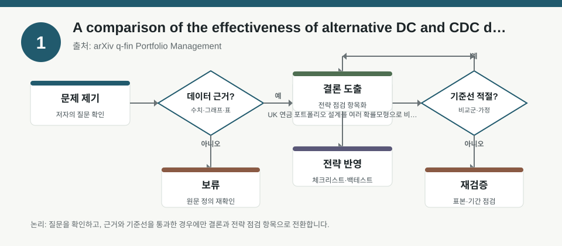
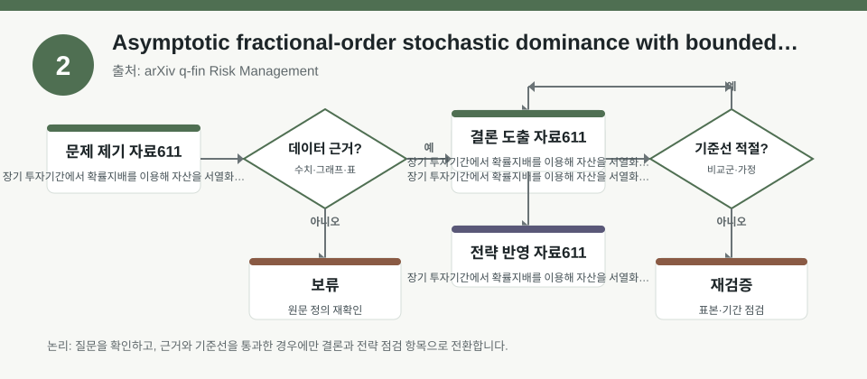
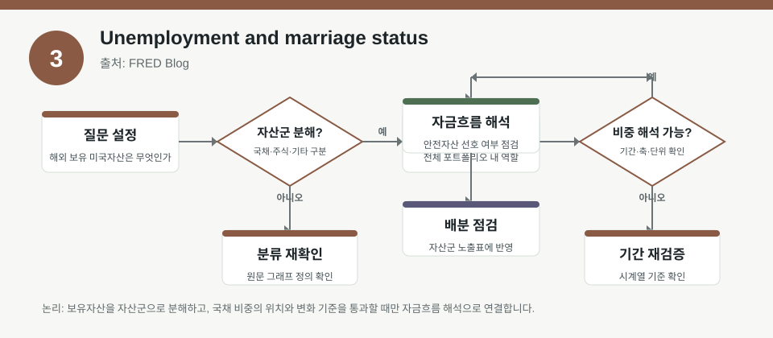

핵심 요약
- 결론: 이번 자료들은 UK 퇴직자산 설계, 장기 위험서열, 실업률 해석처럼 포트폴리오·리스크·거시지표를 읽는 틀을 제공하므로, 한국 투자자는 KOSPI/KOSDAQ 업종 비중과 금리·환율·변동성 민감도를 함께 점검하는 관점이 유효합니다.
- 원칙: 수치·성과·순위는 원문 메타데이터만으로 확정하지 말고, 모형 가정·표본·정의·기간이 무엇인지 먼저 검증해야 합니다.
주목할 자료
| 번호 | 자료 | 출처 | 원문 | 핵심 내용 | 데이터 포인트 | 리스크/한계 |
|---|---|---|---|---|---|---|
| 1 | A comparison of the effectiveness of alternative DC and CDC designs in a UK market | arXiv q-fin Portfolio Management | 원문 보기 | UK 연금 포트폴리오 설계를 여러 확률모형으로 비교한 연구 | DC, CDC, annuitisation, drawdown, gradual annuitisation의 설계 차이와 경로의존성 점검 | 원문 메타데이터에 성과 수치가 없어 우열을 단정할 수 없고, 영국 제도·가정의 한국 직접 적용은 검증이 필요 |
| 2 | Asymptotic fractional-order stochastic dominance with bounded relative risk aversion | arXiv q-fin Risk Management | 원문 보기 | 장기 투자기간에서 확률지배를 이용해 자산을 서열화하는 새로운 위험관리 규칙 제안 | 상대위험회피 제약, 장기수익률의 로그정규 가정 여부, 순위 민감도 확인 | 지배기준은 가정에 민감하며, 비정상분포·꼬리위험·비유동성 자산에서는 해석 한계가 있을 수 있음 |
| 3 | Unemployment and marriage status | FRED Blog | 원문 보기 | 실업률이 구직 중인 사람만 포함한다는 정의와 가구구성 차이가 지표 해석에 영향을 준다는 설명 | marriage status에 따른 실업률 분해, 노동시장 참여율과의 구분, 지표 정의 확인 | 실업률 단일값만 보면 노동공급·가구구성 효과를 놓칠 수 있고, 한국 지표와 정의 차이를 검토해야 함 |
자료별 상세
1. A comparison of the effectiveness of alternative DC and CDC designs in a UK market

- 핵심: 연금형 포트폴리오는 적립·인출·연금화의 조합에 따라 위험배분이 달라지므로, 단순 수익률보다 경로별 현금흐름 안정성을 함께 봐야 합니다.
- 데이터 포인트: DC, CDC, full annuitisation, flex-and-fix, gradual annuitisation 같은 구조가 비교 대상입니다.
- 리스크: 원문 메타데이터에는 모형 파라미터, 수익률 수준, 샘플 구간이 없어 성과 비교를 사실로 적기 어렵습니다.
- 투자전략 반영 예시: 한국 투자자는 KOSPI/KOSDAQ 업종 비중을 점검할 때도 배당·현금창출·금리 민감도를 분리해서, 은퇴자산용과 성장자산용 구성을 따로 기록하는 체크리스트를 둘 수 있습니다.
- 실행 예시: 자산군별로 “주식·채권·현금 비중, 환헤지 여부, 인출 필요 시점, 금리 1회 변화 시 민감 자산”을 표로 적어두고 분기마다 재점검합니다.
2. Asymptotic fractional-order stochastic dominance with bounded relative risk aversion

- 핵심: 장기 horizon에서의 확률지배는 단기 기대수익보다 투자자 효용과 위험회피 성향을 더 직접적으로 반영하는 서열화 도구입니다.
- 데이터 포인트: bounded relative risk aversion, asymptotic fractional-order stochastic dominance, long investment horizon이 핵심 키워드입니다.
- 리스크: 분포 가정이 로그정규에 가깝다는 메타데이터가 보이지만, 실제 시장의 두꺼운 꼬리·점프위험이 반영되는지는 확인이 필요합니다.
- 투자전략 반영 예시: 한국 투자자는 업종별 팩터 노출을 볼 때도 가치·성장·퀄리티·모멘텀의 장기 우위를 단정하지 말고, 가정 변화에 따라 순위가 바뀌는지 점검하는 방식으로 활용할 수 있습니다.
- 실행 예시: 후보 포트폴리오를 대상으로 금리상승기·원화약세기·변동성 급등기 3개 시나리오에서 상대성과 순위가 얼마나 바뀌는지 메모해 두는 체크리스트를 만듭니다.
3. Unemployment and marriage status

- 핵심: 실업률은 “일자리가 없는 사람”이 아니라 “구직 의사가 있는 사람”을 세는 지표이므로, 가구구성과 노동참여 변화가 함께 움직일 수 있습니다.
- 데이터 포인트: marriage status별 실업률 분해와 노동시장 정의 차이가 핵심입니다.
- 리스크: 미국 FRED 해석을 한국 고용시장에 그대로 대입하면, 연령구조·가구형태·제도 차이 때문에 오독할 수 있습니다.
- 투자전략 반영 예시: 한국 투자자는 거시지표를 볼 때 실업률만 보지 말고, 참가율·임금·고용형태·가구소득 변화가 KOSPI 내 소비·금융·내수 업종에 주는 영향을 함께 체크할 수 있습니다.
- 실행 예시: 월별 점검표에 “실업률, 참가율, 임금, 원/달러, 국채금리, 신용스프레드”를 함께 적고, 숫자의 방향과 정의를 분리해 기록합니다.
팩터·리스크·포트폴리오 관점
- 핵심: 세 자료를 묶어 보면, 포트폴리오 설계는 단순 기대수익보다 금리·환율·변동성·현금흐름·지표정의까지 포함한 다차원 검수 문제입니다.
- 검수: 모든 자료가 메타데이터 수준이어서 표본기간, 파라미터, 국가제도, 검정통계는 원문에서 별도 확인이 필요합니다.
정리
- 결론: 포트폴리오·거시 해석의 공통점은 “수치”보다 “정의와 가정”을 먼저 확인하는 데 있습니다.
- 다음 확인: 원문에서 모형 설정, 기간, 표본, 분포 가정, 성과 지표 정의를 확인한 뒤 한국 시장에 맞는 체크리스트로 재구성해야 합니다.